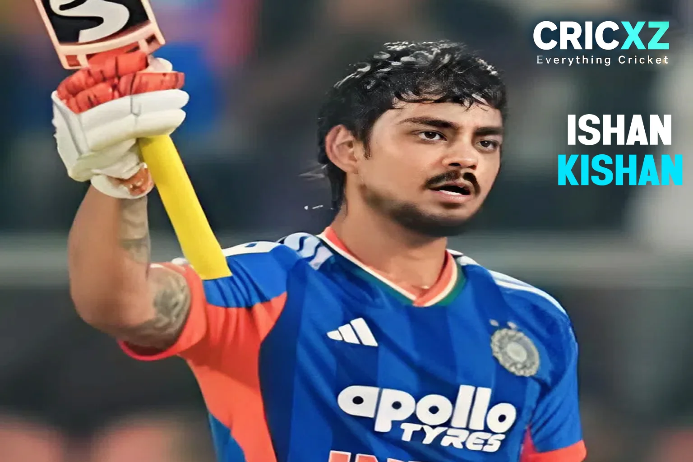

Test
- Matches
- 2
- Batting innings
- 3
- Not outs
- 2
- Runs
- 78
- Highest score
- 52*
- Batting average
- 78.00
- Strike rate
- 85.71
- Hundreds
- 0
- Fifties
- 1
- Fours
- 8
- Sixes
- 7

Ishan Kishan has scored 2,886 runs and 3 centuries across Test, ODI and T20I cricket as of 1 October 2026. The dynamic India wicketkeeper-batter has a highest score of 210 in ODIs and 103 in T20Is.
Statistics as of: 1 October 2026
Primary career statistics source: BCCI / ICC
As of 1 October 2026, Ishan Kishan has scored 2,886 runs across Test, ODI and T20I cricket for India. His international record includes 78 Test runs, 1,107 ODI runs and 1,701 T20I runs. Known for his aggressive stroke play, he is a vital cog in India's limited-overs setup.
Kishan has scored 3 international centuries across formats: 2 in ODIs and 1 in T20 internationals. His highest international scores are 52 not out in Tests, 210 in ODIs and 103 in T20Is.
In ODI cricket, Kishan has amassed 1,107 runs at an impressive average of 42.58 and a strike rate of 107.06, including 2 centuries and 7 half-centuries. His incredible knock of 210 against Bangladesh in December 2022 remains the fastest double-century in ODI history.
Kishan's T20I record includes 1,701 runs at a rapid strike rate of 145.50. He recently cemented his reputation as a big-match player by smashing a match-winning 80* off 46 balls against Sri Lanka in the Asian Games 2026 Semifinal.
12 July 2023
Against West Indies at Windsor Park, Roseau.
18 July 2021
Against Sri Lanka at R. Premadasa Stadium, Colombo.
14 March 2021
Against England at Narendra Modi Stadium, Ahmedabad.
As of 1 October 2026, Ishan Kishan is a key member of India’s white-ball teams. He recently played a pivotal role in guiding India to the Men's T20 Final at the Asian Games 2026 in Nagoya. He has also displayed phenomenal form in domestic red-ball cricket, recently leading the East Zone to a historic Duleep Trophy title.
Kishan has been in sublime touch during the 2026 T20I season. He smashed consecutive half-centuries against Zimbabwe and Afghanistan before his match-winning 80* in the Asian Games Semifinal against Sri Lanka.
He continues to be a formidable top-order option in ODIs, maintaining an average of over 42 and a strike rate exceeding 107.
In September 2026, Kishan captained the East Zone to victory in the Duleep Trophy final against South Zone. He played a monumental knock of 270 runs in 334 balls in the first innings, proving his mettle in the longest format.
Smashed 210 off 132 balls against Bangladesh, becoming the fastest batter in cricket history to score a double-century in ODIs.
Captained East Zone to the 2026–27 Duleep Trophy title, scoring a massive 270 in the final against South Zone.
Played a match-winning unbeaten 80 against Sri Lanka in the semi-final to take India to the Gold Medal match of the 2026 Asian Games.
Scored a fearless 56 off 32 balls on his T20I debut against England and won the Player of the Match award.
Captained Jharkhand to their first-ever SMAT title, scoring a century in the final and finishing as the tournament's leading run-scorer (517 runs).
Statistics as of: 1 October 2026. Test, ODI and T20I aggregate figures use the ICC and BCCI career-statistics baseline.